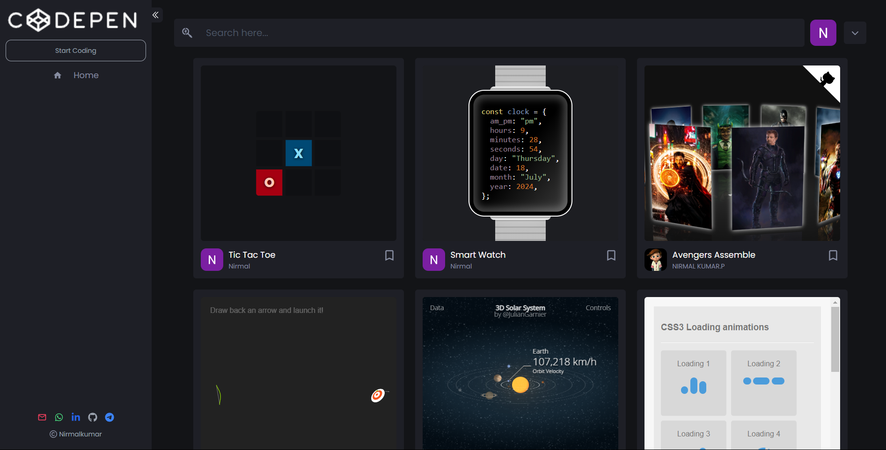

A REATIME ONLINE CODING PLATFORM
The proposed real-time online coding platform is designed to provide a seamless and interactive environment for coding enthusiasts and developers to write, test, and save their HTML, CSS, and JavaScript code simultaneously. This platform is built with modern web technologies such as HTML, CSS, JavaScript, and React, ensuring a responsive and dynamic user experience. By leveraging Tailwind CSS, the platform achieves a sleek and intuitive design, enhancing user engagement and usability. This system aims to facilitate learning and development by allowing users to see the immediate results of their code, promoting an interactive and hands-on approach to coding education. A key feature of the platform is its integration with a real-time database, which ensures that users' code and projects are saved and updated instantly. This real-time synchronization allows users to access their work from any device without the risk of losing their progress. The platform also incorporates Redux for state management, providing a consistent and reliable user experience by managing the complex state of the application efficiently. Additionally, the platform supports real-time collaboration, enabling multiple users to work on the same project simultaneously, fostering teamwork and collaborative learning. Security and user authentication are paramount in this platform. It offers multiple authentication methods, including Google and GitHub login options, as well as traditional email and password-based authentication. This multi-faceted approach to authentication ensures that users can choose their preferred method of accessing the platform while maintaining a high level of security. The combination of these advanced features makes the real-time online coding platform a robust and versatile tool for both novice coders and experienced developers, aiming to enhance their coding skills and project management capabilities.